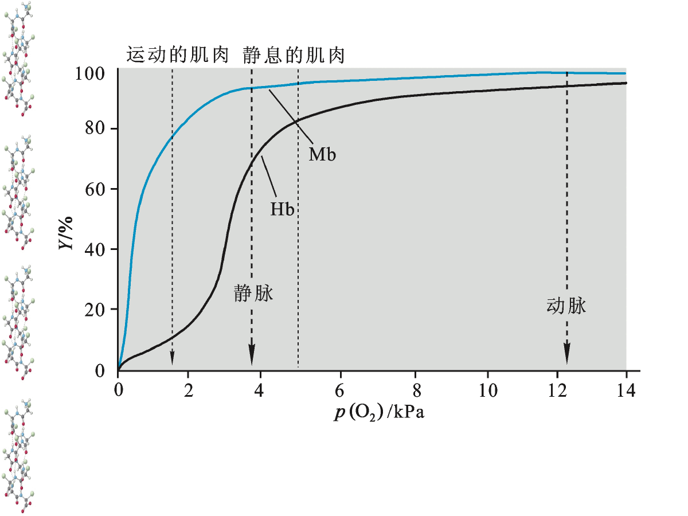
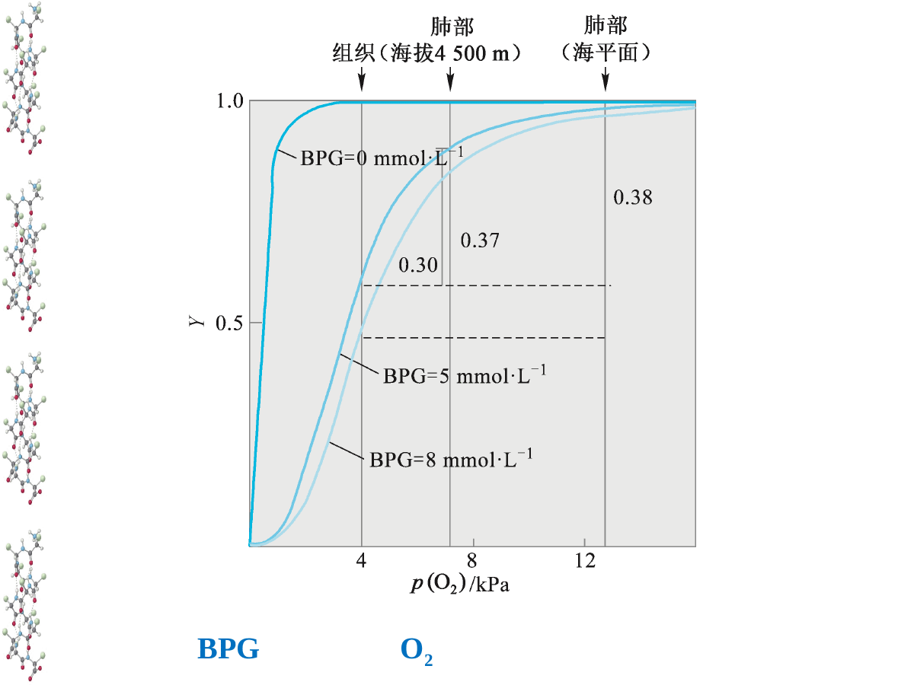
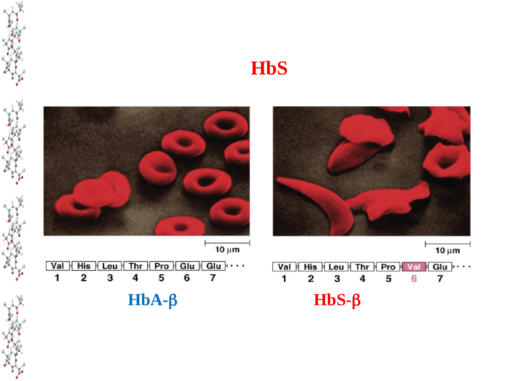

CHAPTER 04 · PROTEIN FUNCTION
蛋白质的功能：结构、配体与构象平衡
同一套氨基酸既能组成承受拉力的纤维，也能组成会“感知环境”的氧运输蛋白。功能来自三维结构，也来自结构在不同状态之间转换的能力。
结构—功能关系纤维状蛋白珠蛋白与别构调节无序蛋白
1. 蛋白质功能远不止“酶”
课件把蛋白质称为生物体系的“功能试剂”。酶负责催化，受体与转录因子传递或解释信号，抗体完成分子识别，血红蛋白运输氧，角蛋白和胶原承担力学任务，肌动蛋白与肌球蛋白把化学能转成运动。南极鱼抗冻蛋白还能吸附微小冰晶表面，阻止冰晶继续长大。
兼职蛋白（moonlighting protein）说明“一种结构只对应一种功能”并非绝对。磷酸葡萄糖异构酶在胞内参与糖酵解，分泌到胞外后又可作为神经白介素或自分泌运动因子。GAPDH 以四聚体参与糖酵解，也能在细胞核参与转录调控和 DNA 修复。不同亚细胞定位、寡聚状态、配体或翻译后修饰，可让同一条序列进入不同功能环境。
主动回忆
若一个蛋白质没有改变氨基酸序列，却从胞质转移到细胞核，它为什么可能获得新功能？请从结合对象、局部浓度和寡聚状态三个角度解释。
2. 结构与功能：一条因果链，也有重要例外
一级序列影响构象集合形成结合与反应表面产生功能
一级序列决定侧链的位置与化学可能性，折叠把相距很远的残基带到同一活性中心或结合界面。破坏高级结构通常会损害功能，但蛋白质并非只有一个静态构象。配体结合、pH、磷酸化和亚基装配可重新分配各构象的比例。因而“结构决定功能”更准确地说，是结构集合及其转换动力学决定功能。
执行相似功能，但并非来自同一祖先基因，常源于趋同进化。功能相似不能单独证明同源关系。
细胞色素 c 在需氧生物中高度保守，许多残基不能随意替换。不同物种间序列差异可用于推断亲缘关系，但序列相似性通常首先说明共同祖先；要判断功能是否相同，还需结合关键位点、结构域、表达位置和实验结果。
3. 纤维状蛋白：序列重复如何变成材料性质
| 蛋白质 | 核心序列与结构 | 稳定方式 | 宏观性质 |
|---|---|---|---|
| α-角蛋白α-Keratin | 中央 α 螺旋具有周期性疏水残基，两条链缠成卷曲螺旋 | 疏水界面与链间二硫键 | 坚韧并有一定弹性；毛发、指甲 |
| 丝心蛋白Silk fibroin | Gly-Ala/Ser 重复，形成紧密反平行 β 折叠 | 主链氢键和片层堆积，几乎无共价交联 | 高抗张强度，同时保持柔韧 |
| 胶原Collagen | 三条链，每条含 Gly-X-Y 重复并形成左手螺旋，三链再组成右手三股螺旋 | 链间氢键、Hyp 的构象稳定作用与成熟后的共价交联 | 抗拉、支撑细胞外基质 |
角蛋白的二硫键密度会改变材料硬度。烫发先用还原剂打开二硫键，在外力下重排毛发形状，再氧化形成新的交联。丝心蛋白则依靠 Gly 和 Ala/Ser 的小侧链让 β 片层紧密靠近，规则晶区提供强度，无序区与转角提供延展性。
胶原中每第三个残基必须是 Gly，因为三股螺旋中心极其拥挤，只有 H 侧链能够容纳。Pro 与 4-羟脯氨酸限制主链构象，使单链预先接近三股螺旋需要的几何。羟化反应依赖维生素 C；缺乏维生素 C 会降低胶原稳定性并造成坏血病。这里应避免把 Gly 说成“疏水核心”：它的关键贡献是体积最小，允许三链紧密堆积。
拓展：胶原 IV 的溴依赖交联
基底膜中的过氧化物酶 peroxidasin 利用溴离子生成活性溴物种，促进胶原 IV 形成硫亚胺键。溴因此在这一特定动物过程里具有必需微量元素的意义。
4. 肌红蛋白：单个结合位点的氧储存器
肌红蛋白（myoglobin, Mb）是一条含 153 个残基的多肽，主要由 8 段 α 螺旋组成。它非共价包埋一个血红素（heme）。Fe²⁺ 的六个配位位置中，四个连接卟啉 N，第五个连接近端 His F8，第六个可逆结合 O₂。远端 His E7 不直接配位 Fe，却可与结合的 O₂形成氢键并限制配体角度，从而降低 CO 相对于 O₂ 的结构优势。
血红素藏在疏水口袋中，既允许 O₂进入，又减少水接近 Fe²⁺造成氧化的机会。若 Fe²⁺变为 Fe³⁺，会形成不能正常结合氧的高铁肌红蛋白。Mb 只有一个结合位点，因此其饱和度呈双曲线：
Y = pO₂ / (P₅₀ + pO₂)
P₅₀ 表示达到 50% 饱和度所需的氧分压。P₅₀ 越小，亲和力越高。Mb 在较低氧分压下仍保持高饱和度，适合在肌肉中储氧，并在剧烈运动导致氧分压下降时释放氧。
5. 血红蛋白：四级结构带来协同效应

图源：第4章《蛋白质的功能》PPT，第32页。蓝色为 Mb，黑色为 Hb。
成人血红蛋白 HbA由 α₂β₂ 四个亚基组成，每个亚基都含一个血红素。单个亚基的序列与 Mb 差异很大，但珠蛋白折叠相似。Hb 的氧结合曲线呈 S 形，反映正协同效应：一个亚基结合 O₂后，提高其他亚基的平均亲和力。
脱氧 Hb 主要处于低亲和力 T 态，氧合过程使平衡移向高亲和力 R 态。O₂结合后，Fe²⁺移入卟啉平面，牵动近端 His F8 和 F 螺旋，亚基界面随之重排。MWC 齐变模型强调四个亚基整体在 T/R 状态间转换；KNF 序变模型允许配体先改变所结合亚基，再逐步影响邻近亚基。真实蛋白的行为可以同时呈现两类特征。
曲线形状对应运输策略
肺部氧分压高，Hb 接近饱和。组织氧分压降低时，S 形曲线的陡峭区使较小的氧分压变化引起较多 O₂释放。Mb 的高亲和力双曲线则有利于从 Hb 接收氧，并把氧保留到肌肉真正缺氧时。
6. 别构调节：组织代谢状态改变 Hb 的放氧量
代谢活跃组织产生 H⁺和 CO₂。质子化及 CO₂在链 N 端形成氨基甲酸盐可增加盐桥、稳定 T 态，使曲线右移并促进放氧。肺中 CO₂排出、pH 回升，平衡转向 R 态。
带负电的 2,3-BPG 结合脱氧 Hb 两条 β 链之间的正电中央空腔，稳定 T 态并降低氧亲和力。高海拔适应时 BPG 增多，可提高组织放氧。
HbF 为 α₂γ₂。γ 链与 BPG 的结合弱于 β 链，使 HbF 氧亲和力高于 HbA，有利于胎儿从胎盘中的母体血液获得氧。

图源：第4章《蛋白质的功能》PPT，第40页。BPG 增加使曲线右移，P₅₀ 增大。
“亲和力下降”并不自动等于功能受损。运输蛋白既要在肺中装载，也要在组织中卸载。若 Hb 像 Mb 一样始终高亲和，虽容易结合氧，却难以把氧交给组织。Bohr 效应和 BPG 调节的价值就在于让亲和力随生理环境改变。
7. HbS：一个残基改变蛋白质表面化学

图源：第4章《蛋白质的功能》PPT，第43页。
镰状细胞血红蛋白 HbS 的 β 链第 6 位由带负电的 Glu 变为疏水 Val。这个突变没有摧毁珠蛋白整体折叠，却在分子表面制造了疏水斑块。脱氧状态下，该斑块嵌入另一 HbS 分子的疏水口袋，促使血红蛋白聚合成长纤维，红细胞因而变形、变脆并堵塞微血管。
这一案例把前几章连成完整因果链：一级结构改变一个侧链，表面相互作用随之改变，四级组装出现异常，细胞形态和生理功能最终受损。杂合子在疟疾流行地区具有一定选择优势，也解释了致病等位基因为何能在群体中维持较高频率。
8. 无序蛋白与功能预测：没有固定结构也能工作
课件使用“天然无折叠蛋白质 NUP”，现代文献更常用固有无序蛋白（IDP）和固有无序区（IDR）。它们富含 Gln、Ser、Pro、Glu、Lys 等亲水或带电残基，缺少形成稳定疏水核心所需的大体积疏水残基。无序并不等于随机或无功能；它们以构象集合存在，可提供多个短线性基序和修饰位点，并在结合 DNA、RNA 或蛋白质后发生耦联折叠。
预测未知蛋白功能时，可先用序列同源性寻找可能的家族，再识别结构域、保守位点、信号肽和跨膜区。结构预测可判断残基是否聚集成口袋或界面，表达位置和互作网络则帮助限定生理角色。最后仍需突变、结合或活性实验建立因果关系。兼职蛋白与 IDR 提醒我们：单一序列或单张静态结构通常不足以穷尽全部功能。
章节回忆链
任选胶原、HbA 或 HbS，从“序列特征”开始，依次讲到局部结构、亚基或纤维装配、物理性质，最后落到生理功能。若中间某一步讲不清，就回看那一节。